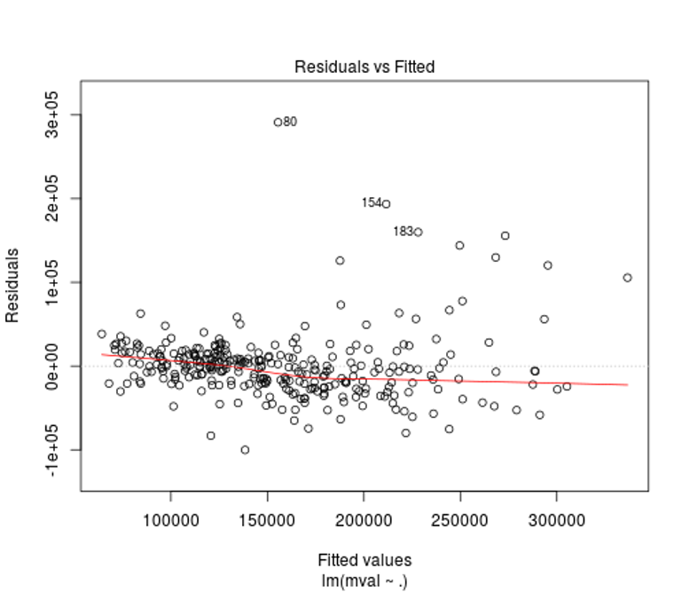
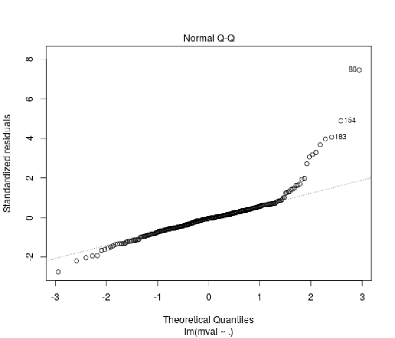
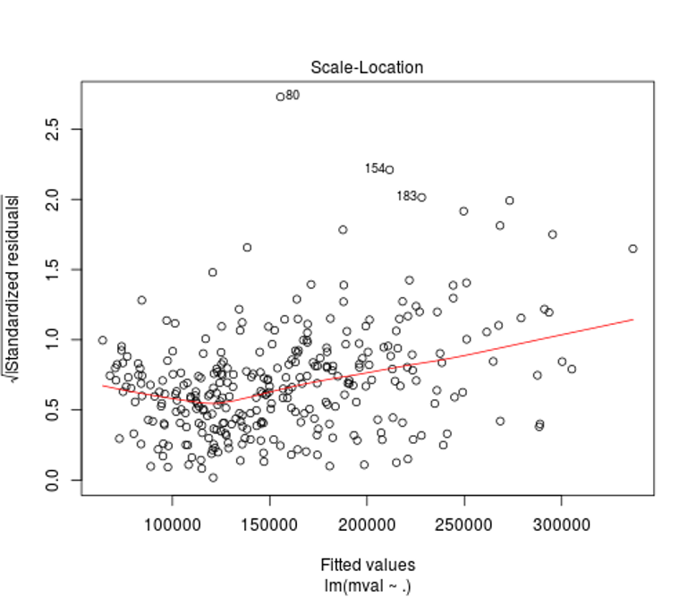
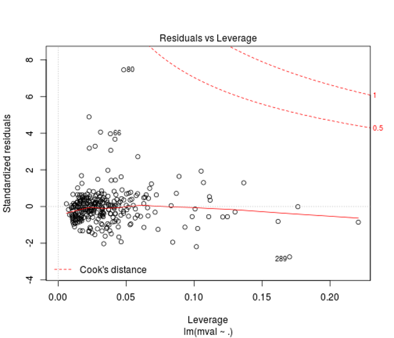

Multiple linear regression is useful for modelling the relationship between a numeric outcome or dependent variable (Y) and multiple explanatory or independent variables (X)
If you need help, don’t hesitate to type: help(lm).
From the foreclosure data set, we are going to use median house value mval in the census tract as our dependent variable as we fit a linear regression model using median household income inc and proportion of population over 25 with at least a bachelors degree pop25 as explanatory or independent variables:
attach(fcdf) model1 <- lm(mval~inc+pop25, data=fcdf) summary(model1) ## Call: ## lm(formula = mval ~ inc + pop25, data = fcdf) ## ## Residuals: ## Min 1Q Median 3Q Max ## -144397 -20532 -1895 15213 274508 ## ## Coefficients: ## Estimate Std. Error t value Pr(>|t|) ## (Intercept) 5.110e+04 5.895e+03 8.668 2.64e-16 *** ## inc 9.894e-01 1.402e-01 7.059 1.14e-11 *** ## pop25 1.882e+03 1.915e+02 9.829 < 2e-16 *** ## --- ## Signif. codes: 0 '***' 0.001 '**' 0.01 '*' 0.05 '.' 0.1 ' ' 1 ## ## Residual standard error: 41670 on 305 degrees of freedom ## Multiple R-squared: 0.6149, Adjusted R-squared: 0.6124 ## F-statistic: 243.5 on 2 and 305 DF, p-value: < 2.2e-16
With the Multiple R-Squared value, we can state approximately 61% of the variation in median house value can be explained by our model (income and population over 25 with degrees).
The F-statistic and P value give us a sense of the overall significance of our model. This tests the null hypothesis that all the model coefficients are 0. In this case, it tests if the slope of income and the slope of population with degrees is 0.
The residual standard error tells us how far the observed median house values (Y) are from the predicted or fitted median house values (Y-hats). This gives us an idea of typical sized residual or error (e).
The intercept (5.110e+04 or 51100) is the estimated mean dependent value (Y) when all explanatory values (X) are 0. In this case, our intercept is the estimated mean median house value for incomes and populations of 0.
The slope for income (9.894e-01 or 0.9894) tells us the effect of income on median house value adjusting or controlling for proportions of populations over 25 with degrees.
The slope for population (1.882e+03 or 1882) tells us the effect of population older than 25 with degrees on median house value adjusting or controlling for income.
We can now calculate Pearson’s correlation between income and proportion of population over 25 with degrees:
cor(inc, pop25, method="pearson") ## [1] 0.7058064
We can interpret this in stating the collinearity between income and population variables implies that we should NOT directly interpret the slope (for example income) as the effect of income on median house value adjusting for population over 25 with degrees. The relatively high correlation between income and population suggests that these two effects are somewhat bounded together.
We can also quickly check our confidence intervals for the model coefficients (inc and pop25):
confint(model1, level=0.95) ## 2.5 % 97.5 % ## (Intercept) 3.949892e+04 62700.044665 ## inc 7.135851e-01 1.265221 ## pop25 1.505356e+03 2258.935658
This tells us, for example, for our slope for income of 9.894e-01 (0.9894), we are 95% confident that the true slope is between 0.7136 and 1.2652.
Now lets fit a linear model with all the variables in our data frame:
model2 <- lm(mval~., data=fcdf) summary(model2) ## Call: ## lm(formula = mval ~ ., data = fcdf) ## ## Residuals: ## Min 1Q Median 3Q Max ## -100139 -20799 -1869 13889 291081 ## ## Coefficients: ## Estimate Std. Error t value Pr(>|t|) ## (Intercept) 5.083e+04 1.907e+04 2.665 0.00812 ** ## highc -2.010e+03 1.044e+03 -1.925 0.05521 . ## black -1.870e+04 1.833e+04 -1.021 0.30831 ## hisp -4.577e+03 2.016e+04 -0.227 0.82053 ## inc 1.083e+00 1.842e-01 5.878 1.12e-08 *** ## oocc -4.616e+04 1.838e+04 -2.511 0.01258 * ## pop25 1.615e+03 2.227e+02 7.251 3.61e-12 *** ## notblt -1.477e+03 3.452e+04 -0.043 0.96591 ## aft00 -1.662e+04 1.244e+04 -1.336 0.18259 ## hs 7.428e+04 2.343e+04 3.170 0.00168 ** ## rate 1.691e+03 1.121e+03 1.509 0.13240 ## --- ## Signif. codes: 0 '***' 0.001 '**' 0.01 '*' 0.05 '.' 0.1 ' ' 1 ## ## Residual standard error: 40050 on 297 degrees of freedom ## Multiple R-squared: 0.6537, Adjusted R-squared: 0.642 ## F-statistic: 56.05 on 10 and 297 DF, p-value: < 2.2e-16
Plot the model to check its assumptions through examination of the residuals or errors:
plot(model2)   
{kind=link}
{kind=link}
{kind=link}
{kind=link}
We can see from the residuals vs. fitted plot that the relationship between mval, inc, and pop25 is relatively linear, but there is a bit of heteroscedasticity (non-constant variance) that needs to be addressed (luckily it labels some values for you to examine). Adjustments to these values may lead to a better fit for your model.
With the normal Q-Q plot, we can see that median house value given income and population over 25 with degree has visible heteroscedasticity that will need to be addressed. Otherwise, the Q-Q plot shows a relatively good fit.
The scale-location or spread-level plot shows the raw data as the square roots of the absolute values of the residuals against the fitted values. The lowess curve’s upward slope in red serves to further demonstrates the effects of our heteroscedasticity on the model.
We can see in the residuals vs. leverage plot that our non-constant variance is affecting our model and requires standardization of the outlier residuals to correct the leverage they are exhibiting on the residual standard deviation. Only a slight adjustment would need to be made as our high residual is exhibiting relatively low leverage on our fitted model. Further examination of Cook’s distances would tell you how far your predicted values for your data would move if your model was fitted without the outliers you select (the plot points out some for you along with the Cook’s distances).
This work is licensed under a Creative Commons Attribution-NonCommercial-ShareAlike 4.0 International License.